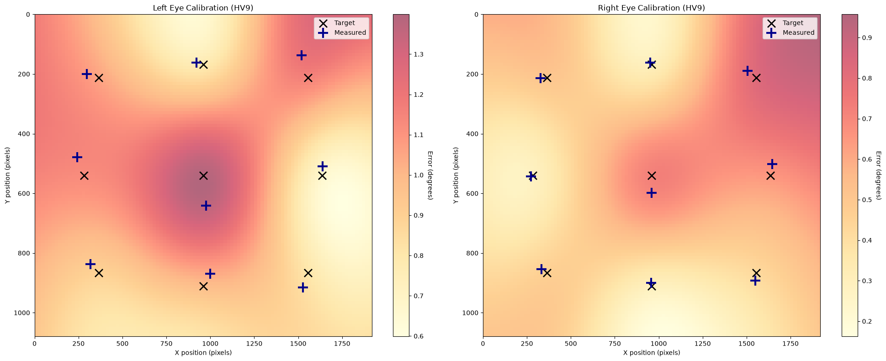

Spatial calibration#
Experimental: Calibration data can be read and inspected, but they are not yet used to correct the data, and the API may change.
Before and during a recording, eye trackers are calibrated and the calibration is checked (validated) by asking the participant to fixate a set of points. The validation shows how accurately the gaze position is measured in different parts of the screen. Poor accuracy in some region affects all analyses of gaze positions there, e.g., with regions of interest.
[1]:
import pypillometry as pp
import matplotlib.pyplot as plt
pp.logging_set_level("WARNING")
from_eyelink() reads the validation results from Eyelink EDF files and stores them as one SpatialCalibration object per eye in calibration:
[2]:
d = pp.EyeData.from_eyelink("../../data/test.edf")
d.calibration
[2]:
{'left': <SpatialCalibration: left eye, HV9, n=9, error=0.98±0.33° (max=1.62°)>,
'right': <SpatialCalibration: right eye, HV9, n=9, error=0.50±0.27° (max=0.91°)>}
Each object contains the target points, the measured gaze positions and the error at each point (in degrees of visual angle). get_stats() summarizes the error:
[3]:
cal = d.calibration["left"]
cal.get_stats()
[3]:
{'n': 9,
'mean': 0.9833333333333333,
'sd': 0.32605384695033296,
'max': 1.62,
'min': 0.49}
[4]:
cal.points[:3], cal.measured[:3]
[4]:
(array([[960., 540.],
[960., 168.],
[960., 911.]]),
array([[975.5, 641.2],
[922.1, 161.6],
[998.6, 869.3]]))
plot_calibration() shows the target (×) and measured (+) points of each eye on the screen. The background is an interpolated map of the error:
[5]:
d.plot.plot_calibration();

In this recording, the right eye was measured more accurately than the left eye, which had errors of more than 1° near the screen center. For analyses that depend on precise gaze positions, the right eye would be the better choice.